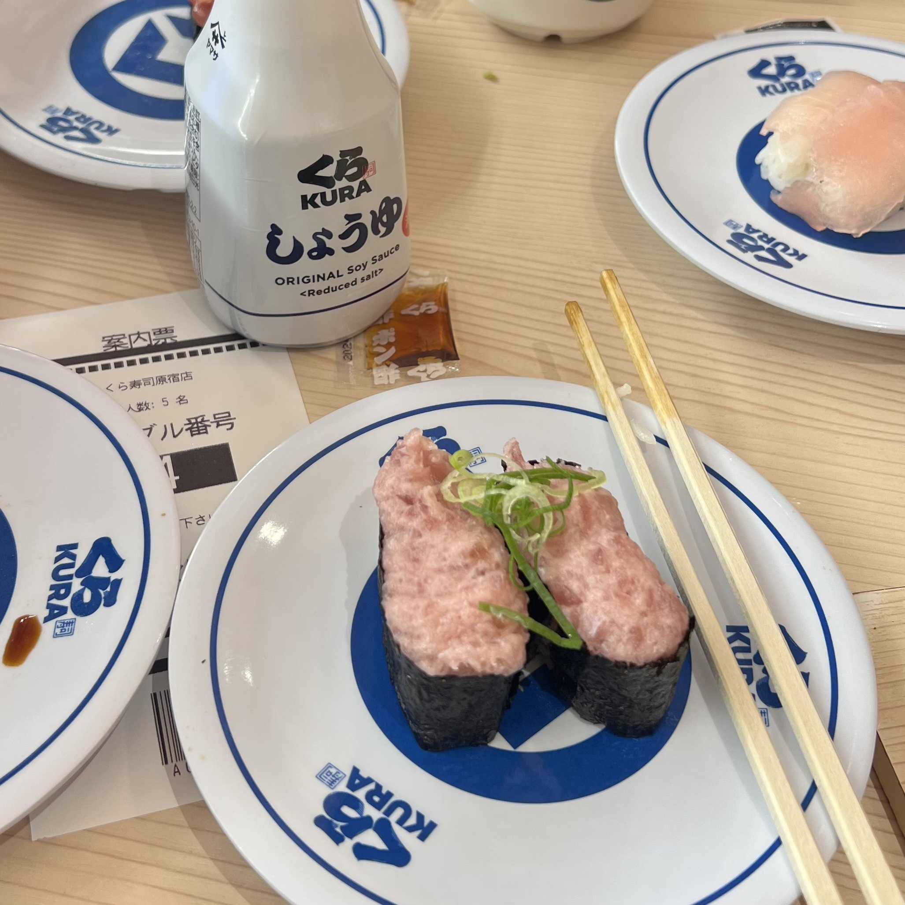
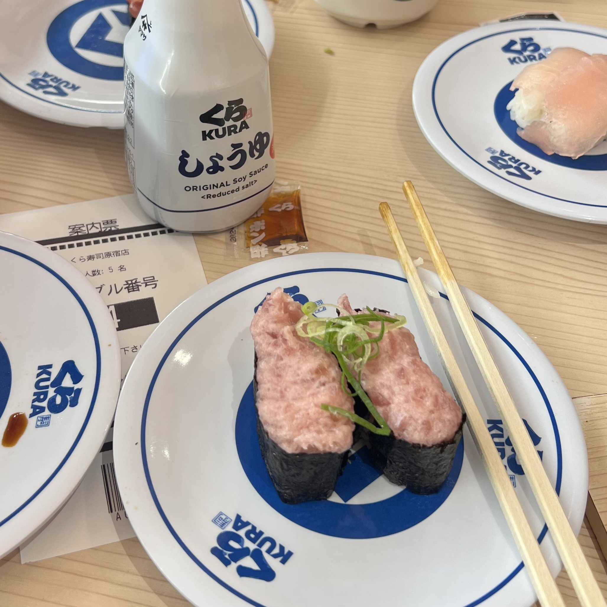
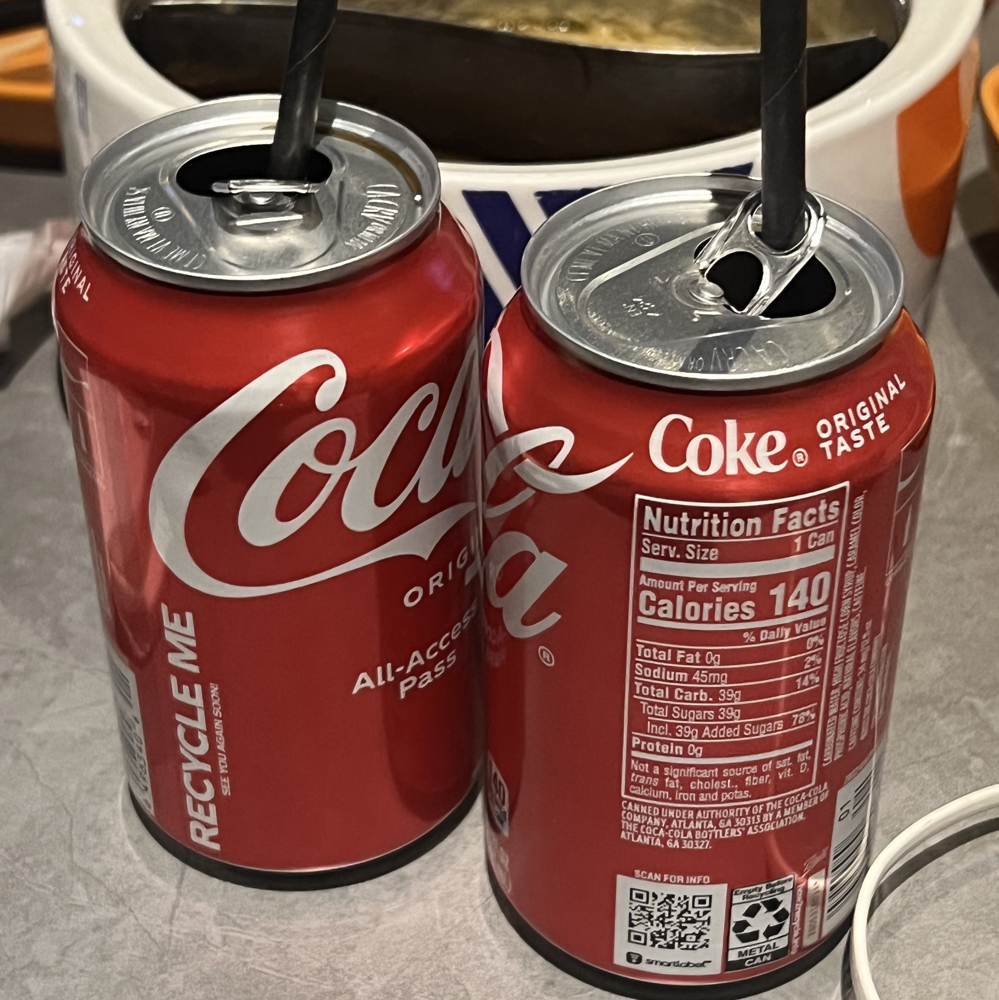
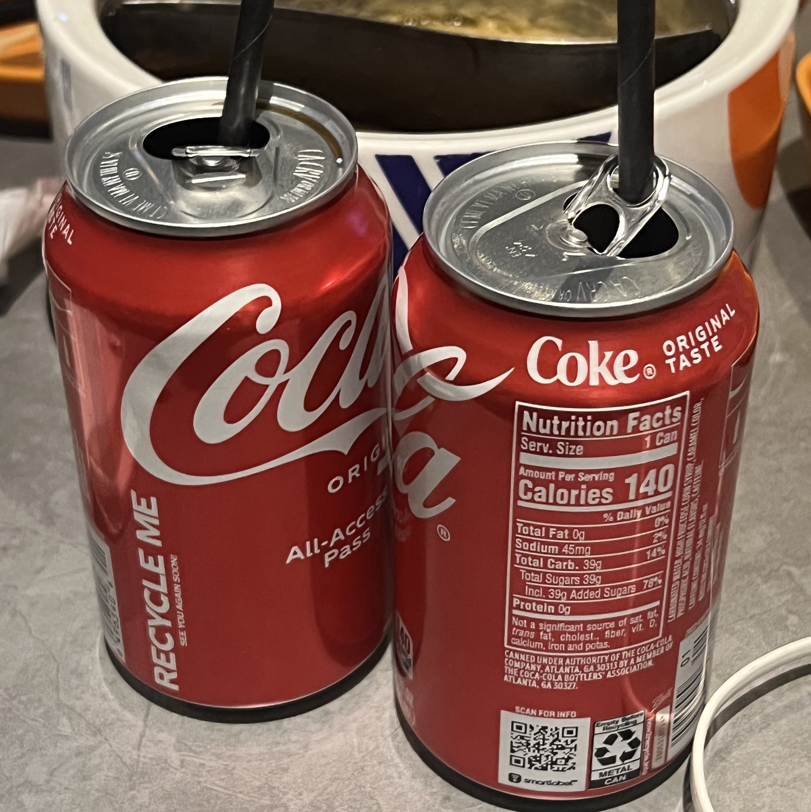

Two Look At Two- Robert Frost (1923)
Love and forgetting might have carried them
A little further up the mountain side
With night so near, but not much further up.
They must have halted soon in any case
With thoughts of a path back, how rough it was
With rock and washout, and unsafe in darkness;
When they were halted by a tumbled wall
With barbed-wire binding. They stood facing this,
Spending what onward impulse they still had
In One last look the way they must not go,
On up the failing path, where, if a stone
Or earthslide moved at night, it moved itself;
No footstep moved it. ‘This is all,’ they sighed,
Good-night to woods.’ But not so; there was more.
A doe from round a spruce stood looking at them
Across the wall, as near the wall as they.
She saw them in their field, they her in hers.
The difficulty of seeing what stood still,
Like some up-ended boulder split in two,
Was in her clouded eyes; they saw no fear there.
She seemed to think that two thus they were safe.
Then, as if they were something that, though strange,
She could not trouble her mind with too long,
She sighed and passed unscared along the wall.
"This, then, is all. What more is there to ask?"
But no, not yet. A snort to bid them wait.
A buck from round the spruce stood looking at them
Across the wall as near the wall as they.
This was an antlered buck of lusty nostril,
Not the same doe come back into her place.
He viewed them quizzically with jerks of head,
As if to ask, "Why don’t you make some motion?
Or give some sign of life? Because you can’t.
I doubt if you’re as living as you look."
Thus till he had them almost feeling dared
To stretch a proffering hand - and a spell-breaking.
Then he too passed unscared along the wall.
Two had seen two, whichever side you spoke from.
"This must be all." It was all. Still they stood,
A great wave from it going over them,
As if the earth in one unlooked-for favour
Had made them certain earth returned their love.
Double Trouble- Jackie Kay (2007)
We were rich and poor.
We were bought and sold.
We were black and white.
We were young and old.
We were life and death.
We were north and south.
We were hand in hand.
We were foot and mouth.
We were good and bad.
We were war and peace.
We were day and night.
We were man and beast.
We were hunger and greed.
We were water and land.
We were empty and full.
We were lost and found.
We had two strings to our bow.
We were in it together.
We were the spitting image.
We were the doppelganger.
We were terrible twins.
We were happy and sad.
We were alter ego.
We were sane and mad.
We were two-faced.
We were two-a-penny.
We spat, ‘Double or quits.’
We sneered, ‘Double the money.’
We liked to two-time.
We stayed in a twin-town.
We led a double life.
We lived in a two-up-two-down.
We were too much.
We were entwined.
We were a right pair.
We were in two minds.
We peered through bifocals.
We talked in double entendres.
We walked double-quick.
We never wandered.
We were a double act.
We were Morecambe and Wise.
We were Laurel and Hardy.
We were Jekyll and Hyde.
We were Romeo and Juliet.
We were tragedy and comedy.
We spoke tête-à-tête.
We were a carbon copy.
We dreamt in a double bed.
We were fluently bilingual.
We were in two minds.
We were never single.
We drove on dual carriageways.
We insisted on equal pay.
We were twinned; we were mated.
We loved and we hated.
We could not be separated.
We could not be separated.
二月二日 (February 2nd)-
李商隐 (Li Shangyin)
二月二日江上行，东风日暖闻吹笙。
花须柳眼各无赖，紫蝶黄蜂俱有情。
万里忆归元亮井，三年从事亚夫营。
新滩莫悟游人意，更作风檐夜雨声。
On the second day of February, I stroll along the river,
The east wind brings warmth, and I hear the flute's melody.
Flowers and willows carefree, without restraint,
Purple butterflies and yellow bees, all filled with affection.
Thinking of my home, ten thousand miles away in Yuanliang Well,
For three years, I've served in the Yafu camp with dedication.
On this new sandbank, don't try to guess the traveler's thoughts,
Let the sound of the night rain on the eaves be our music.
Half Caste- John Agard (2005)
Excuse me
Standing on one leg
I'm half-caste
Explain yuself
Wha yu mean
When yu say half-caste
Yu mean when picasso
Mix red an green
Is a half-caste canvas?
Explain yuself
Wha u mean
When yu say half-caste
Yu mean when light an shadow
Mix in de sky
Is a half-caste weather?
Well in dat case
England weather
Nearly always half-caste
In fact some o dem cloud
half-caste till dem overcast
So spiteful dem dont want de sun pass
Ah rass
Explain yuself
Wha yu mean
When yu say half-caste?
Yu mean tchaikovsky
Sit down at dah piano
An mix a black key
Wid a white key
Is a half-caste symphony?
Explain yuself
Wha yu mean
Ah listening to yu wid de keen
Half of mih ear
Ah looking at u wid de keen
Half of mih eye
And when I'm introduced to yu
I'm sure you'll understand
Why I offer yu half-a-hand
An when I sleep at night
I close half-a-eye
Consequently when I dream
I dream half-a-dream
An when moon begin to glow
I half-caste human being
Cast half-a-shadow
But yu come back tomorrow
Wid de whole of yu eye
An de whole of yu ear
And de whole of yu mind
An I will tell yu
De other half
Of my story
Internal


 



 
